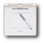
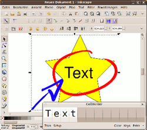
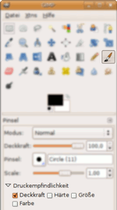
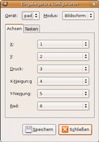
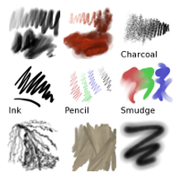

Grafiktabletts

Wacom ist einer der führenden Hersteller für Grafiktabletts zur Bild- und Grafikbearbeitung. Wacom unterstützt Linux als Betriebssystem offiziell nicht. Auf den Webseiten von Wacom finden sich jedoch Links zum Linux Wacom Project  , das Treiber für den XServer bereit stellt. Diese Treiber sind bereits in Ubuntu enthalten und ermöglichen, praktisch alle Funktionen solcher Tabletts zu nutzen.
, das Treiber für den XServer bereit stellt. Diese Treiber sind bereits in Ubuntu enthalten und ermöglichen, praktisch alle Funktionen solcher Tabletts zu nutzen.
Ansonsten gibt es einige wenige weiterere Hersteller von Grafiktabletts, über deren Kompatibilität mit Linux wenig bekannt ist. Im Idealfall wird das Tablett automatisch erkannt und man kann sich gleich der Verwendung widmen.
Hinweis:
Zur Installation und Einrichtung von USB-Grafiktabletts von Wacom gibt es einen eigenen Artikel Wacom USB-Tabletts.
Installation¶
Alles Nötige zum Betrieb eines Tabletts ist bei Ubuntu schon vorinstalliert. Für die wichtigsten Funktionen muss keine zusätzliche Software installiert werden. Bei Sonderwünschen und Spezialfällen kann der Abschnitt Inbetriebnahme weiterhelfen.
Verwendung¶
Die Möglichkeiten, ein Grafiktablett zu verwenden, sind äußerst vielfältig. Die erste Option ist natürlich die Verwendung als Mausersatz. Ihre volle Leistungsfähigkeit, wie die Nutzung der Drucksensitivität, entfalten die Geräte allerdings erst in Grafikanwendungen.
|  |
| Inkscape und Cellwriter |
Stellvertretend für die Bearbeitung von Rastergrafiken sei hier die Bildverarbeitung GIMP genannt. Wie man GIMP mit einem Grafiktablett verwendet, steht weiter unten. Einen anderen Weg geht das Zeichenprogramm MyPaint – hier steht die Kreativität im Vordergrund. Auch für die Bearbeitung von Vektorgrafiken ist ein Grafiktablett ein ideales Werkzeug. Ein passendes Programm hierfür ist Inkscape.
Ein weiteres, sehr interessantes Einsatzgebiet für das Grafiktablett ist das Erstellen kurzer Notizen und vor allem das Kommentieren von PDF-Dateien. Hier bietet Xournal einwandfreie Unterstützung für Tabletts – es ist eine der wenigen Anwendungen, welche auch beim Einsatz von Radierer und Stiftspitze automatisch zwischen den entsprechenden Werkzeugen hin und her wechselt. Noch in Entwicklung befindet sich Whyteboard, mit dem ebenfalls PDF-Dateien kommentiert werden können.
Praktisch für die Eingabe von kurzen Textpassagen bei der Grafikbearbeitung oder beim allgemeinen Arbeiten mit dem Grafiktablett sind auch Anwendungen zur Handschrifterkennung. Diese erlauben, die Eingaben, die man mit dem Stift macht, in Text umzuwandeln. Insofern kann das Tablett auch in stark reduziertem Umfang die Tastatur ersetzen. Einen einfachen Vertreter, der sich aus den offiziellen Paketquellen installieren lässt, stellt das Programm CellWriter dar.
Andere Hilfsprogramme zur Eingabe von Texten mit Hilfe von Schrifterkennung und vieles mehr können in den offiziellen Quellen gefunden werden. Meistens müssen noch einige Optionen aktiviert oder Einstellungen vorgenommen werden, bevor in den einzelnen Programmen das Tablett voll einsatzfähig ist.
GIMP¶
|  |
| GIMP - Pinsel |
|  |
| GIMP - Einstellungen |
Konfiguration¶
In GIMP ruft man dazu unter
"Bearbeiten -> Einstellungen -> Eingabegeräte -> Erweiterte Eingabegeräte konfigurieren"
die Einstellungen für die Eingabegeräte auf.
Als Modus muss immer "Bildschirm" eingestellt sein. Hier kann man auch Details zum Grafiktablett einstellen.
Bedienung¶
Wie schon angesprochen, funktioniert das Tablett mit GIMP vollständig. Mit dem Stylus kann man die gewünschte Zeichenfunktion auswählen und dann im Bild zeichnen. Nutzt man z.B. den Pinsel, so wird der Pinselstrich um so deckender, je fester man aufdrückt. Die Funktionalität der Druckempfindlichkeit lässt sich auch ändern, so kann man beim Pinsel die Deckkraft, Härte, Größe oder Farbe variieren lassen. Andere Werkzeuge bieten ähnliche Möglichkeiten.
Dreht man den Stylus um und nutzt den "Radiergummi", so steht ein komplett unabhängiger Stift bereit. Der Radiergummi muss nicht zwangsläufig als "Radiergummi" dienen. Man kann die Funktion - wie beim normalen Stylus - frei wählen.
Inkscape¶
Auch das vektororientierte Zeichenprogramm Inkscape bringt eine Unterstützung für druckempfindliche Grafiktabletts mit. Besonders das "Kalligrafiewerkzeug" entfaltet sein wahres Potenzial erst mit der Verwendung eines Grafiktabletts.
Bedienung¶
Bei Inkscape das Werkzeug "Kalligrafische Linien zeichnen" auch Füller genannt. Selektiert man den Füller und aktiviert die Druckempfindlichkeit in der Symbolleiste des Füllerwerkzeuges, so wird die Dicke der gezeichneten Linie dem Druck auf den Stift nachempfunden.

MyPaint¶
MyPaint ist ein speziell für den Einsatz mit Grafiktabletts entwickeltes Programm. Zwei Besonderheiten machen es besonders interessant: zum einen die quasi unendliche Leinwand und zum anderen die Unterstützung der Druckempfindlichkeit (sowie deren Konfiguration) beim Zeichnen. Alle Bearbeitungsschritte können rückgängig gemacht werden. Die enthaltenen Pinsel können verändert oder durch die Erstellung neuer erweitert werden. Beispielbilder
Inbetriebnahme¶
Nun schließt man das Grafiktablett an und startet den XServer neu. Anschließend sollte das Tablett als Maus funktionieren. Berührt man mit dem Stift die Oberfläche des Tabletts, so gilt dies als linker Mausklick. Die Tasten auf dem Stift dienen zusätzlich als linke und rechte Maustaste.
Das Tablett individuell einstellen¶
Für die Konfiguration des Tabletts ist das Programm xsetwacom verantwortlich. Es ist Teil des Paketes wacom-tools und ist bei Ubuntu von Haus aus installiert. Leider existiert keine grafische Oberfläche, so dass man es von einem Terminal aus bedienen muss. Der Befehl
xsetwacom set stylus mode absolute
stellt das Tablett auf absolute Positionierung ein. D.h. die linke obere Ecke des Tabletts entspricht der linken oberen Ecke des Bildschirms, die rechte untere Ecke des Tabletts der rechten unteren Ecke des Bildschirms. Dies funktioniert am besten, wenn das Format des Bildschirms zum Tablett passt. Nutzt man z.B. ein System mit zwei Bildschirmen, wo der Desktop über beide Bildschirme ausgedehnt wird, so ist die vertikale Auflösung viel höher als die horizontale. Zeichnet man z.B. einen Kreis auf dem Tablett, so erscheint eine liegende Ellipse auf dem Bildschirm.
Für diesen Fall kann man das Tablett auf relative Positionierung umstellen:
xsetwacom set stylus mode relative
xsetwacom bietet darüber hinaus noch zahlreiche Optionen um das Verhalten des Tabletts anzupassen. Auf der Webseite des Treiber Projekts findet man zahlreiche Informationen hierzu.
Standardgeräte¶
Hinweis:
Die hier genannten Einträge in der Datei /etc/X11/xorg.conf gelten nur bis Ubuntu 8.04 (und wieder für Ubuntu 10.04), aber normalerweise sind sie nicht notwendig.
Ältere Ubuntu-Versionen (z.B. Ubuntu 6.06 oder Ubuntu 7.04) waren noch für Tabletts ausgelegt, die über den seriellen Port angeschlossen werden. Üblicherweise wird heutzutage jedoch der USB-Anschluss genutzt. Daher muss man evtl. in der Konfigurationsdatei des XServers /etc/X11/xorg.conf alle Einträge von /dev/wacom in /dev/input/wacom ändern. Am Ende sieht eine Konfiguration für ein Grafiktablett, das per USB angeschlossen ist, so aus:
Section "ServerLayout"
...
InputDevice "stylus" "SendCoreEvents"
InputDevice "cursor" "SendCoreEvents"
InputDevice "eraser" "SendCoreEvents"
...
EndSection
...
Section "InputDevice"
Identifier "stylus"
Driver "wacom"
Option "Device" "/dev/input/wacom"
Option "Type" "stylus"
Option "USB" "on"
Option "PressCurve" "0,0,100,100"
EndSection
Section "InputDevice"
Identifier "eraser"
Driver "wacom"
Option "Device" "/dev/input/wacom"
Option "Type" "eraser"
Option "USB" "on"
EndSection
Section "InputDevice"
Identifier "cursor"
Driver "wacom"
Option "Device" "/dev/input/wacom"
Option "Type" "cursor"
Option "USB" "on"
EndSectionExpress Keys¶
Besitzer eines Intuos3, Cintiq 21UX oder Graphire 4 Tablets können noch ein zusätzliches Gerät hinzufügen. Diese Tabletts besitzen ein Scrollrad bzw. zusätzlichen Tasten, die "ExpressKeys". Dieses Gerät ist nicht in den Standardeinstellungen enthalten. Man muss es über die Einträge:
Section "ServerLayout"
...
InputDevice "pad"
...
EndSection
...
Section "InputDevice"
Identifier "pad"
Driver "wacom"
Option "Device" "/dev/input/wacom"
Option "Type" "pad"
Option "USB" "on"
EndSectionvon Hand hinzufügen. Ohne diese Einträge und ohne ExpressKeys kann man das Scrollrad und die Tasten nicht benutzen. Allerdings scheint ExpressKeys nicht unproblematisch zu sein: so kam es in der Vergangenheit nach dem Start von ExpressKeys zu Problemen im Zusammenspiel zwischen Grafiktablett und Maus. Beispielsweise war es mit ExpressKeys nicht mehr möglich, innerhalb von GIMP mit der Maus zu zeichnen.
Weitere Optionen¶
Der Wacom-Treiber bietet noch zahlreiche weitere Optionen, die früher in der /etc/X11/xorg.conf definiert wurden. Ausführliche Informationen hierzu findet man auf der Projektseite . Die wichtigsten Optionen sollen hier kurz erklärt werden. Alle Optionen können für jedes Gerät einzeln definiert werden und müssen in den Abschnitt eines jeden Gerätes. Beispiel:
Section "InputDevice"
Identifier "stylus"
Driver "wacom"
...
Option "name" "wert1" "wert2"
EndSectionPositionierung¶
Das Tablett kennt zwei Positionierungsmodi: "Absolut" und "Relativ". Bei Absolut entsprechen die Ecken des Tabletts den Ecken des Bildschirms. Bei Relativ fährt das Tablett in der höchsten Auflösung und die Cursorposition wird immer relativ zur Stiftbewegung gerechnet.
# Allgemein
Option "Mode" "Relative"|"Absolute"
# Beispiel
Option "Mode" "Relative"Dualscreen¶
Nutzt man ein Tablett mit einer Dual-Screen-Lösung am Arbeitsplatz, so passt das Format des Tabletts nicht mehr. Da der Desktop nun beispielsweise nicht mehr ein Format von 4:3, sondern von 8:3 besitzt, entsteht beim Zeichnen eines Kreises auf dem Tablett eine Ellipse auf dem Bildschirm. Daher kann man mit der Option Twinview einen Modus für zwei Bildschirme aktivieren. Hebt man nun bei absoluter Positionierung am Rand des Tabletts den Stift ab und setzt den Griffel neu auf, so wechselt man den Bildschirm.
# Allgemein
Option "Twinview" "horizontal"|"vertical"|"none"
# Beispiel
Option "Twinview" "horizontal"Besitzen die eingesetzten Bildschirme eine unterschiedliche Auflösung, so kann man diese über die Option TVResolution jeweils definieren.
# Allgemein
Option "TVResolution" "res1,res2"
# Beispiel
Option "TVResolution" "1024x768,1280x1024"Schließlich kann festgelegt werden, dass das Tablett nur auf einem Bildschirm aktiv sein soll.
# Allgemein
Option "ScreenNo" "n"
# Beispiel
Option "ScreenNo" "1"Orientierung¶
Besitzt man einen Bildschirm, den man rotieren kann, so lässt sich auch das Tablett dieser Rotation anpassen. Dazu muss die Option Rotate genutzt werden:
# Allgemein
Option "Rotate" "CW"|"CCW"|"HALF"|"NONE"
# Beispiel
Option "Rotate" "CW"Links¶
Wacom Bamboo - Stifttabletts unter Linux
 - Pro-Linux, 12/2009
- Pro-Linux, 12/2009GfxTablet - Android-Geräte als Grafiktablett verwenden
Grafik
 Zeichenprogramme
Zeichenprogramme
- Erstellt mit Inyoka
-
 2004 – 2017 ubuntuusers.de • Einige Rechte vorbehalten
2004 – 2017 ubuntuusers.de • Einige Rechte vorbehalten
Lizenz • Kontakt • Datenschutz • Impressum • Serverstatus -
Serverhousing gespendet von